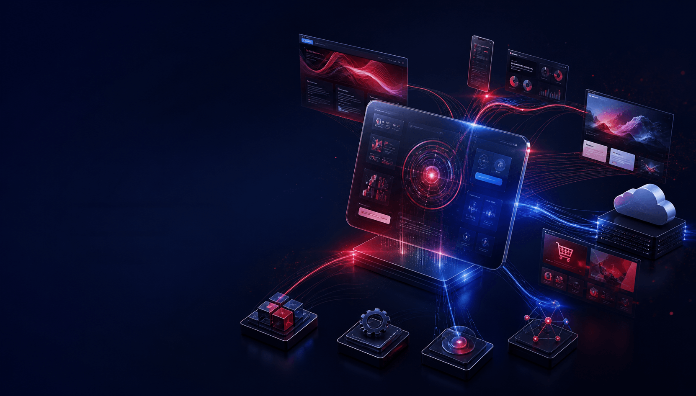
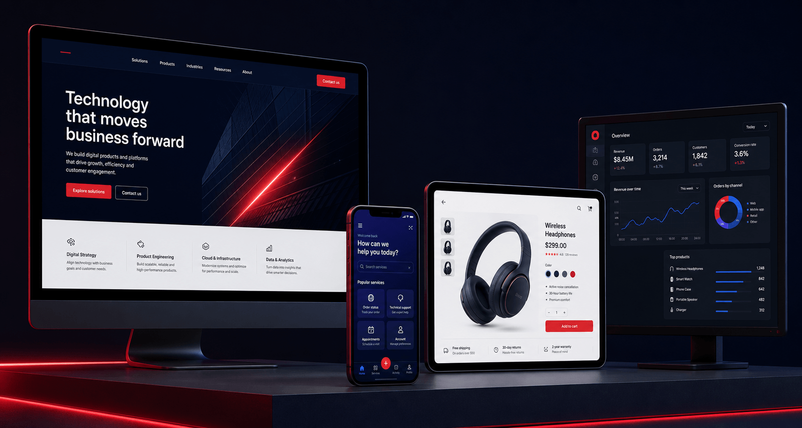

Websites & digital platforms
Responsive, accessible experiences designed to communicate clearly, perform quickly and grow with the brand.
- Corporate websites
- Campaign platforms
- Content ecosystems

Products · Platforms · Intelligence
We design and build digital products, platforms and connected systems that turn ambitious ideas into useful, scalable experiences.
A Madverse specialist company Discover → Design → Build → Evolve
What we do
Technology should make the next action easier—for the customer, the team and the business.
Mad Men Technologies brings product thinking, experience design and engineering into one connected process. We simplify complex challenges, build the right digital foundation and keep improving it as people, platforms and business needs evolve.
Start with the behaviour, operational challenge or growth opportunity technology needs to change.
Design around people, devices, workflows and edge cases—not an idealised presentation screen.
Use scalable foundations that can respond as content, audiences, integrations and ambitions grow.
Technology capabilities
We bring the experience people see and the technology the business depends on into one connected build.
Responsive, accessible experiences designed to communicate clearly, perform quickly and grow with the brand.
Useful products built around real user journeys and reliable operational logic.
Commerce experiences connecting discovery, transaction, fulfilment and customer relationships.
Integrated workflows that reduce repetitive work and give teams a clearer view of every customer.
Useful views of performance that turn scattered information into faster decisions.
Reliable connections between platforms, partners and internal tools that keep information moving.
Practical intelligence embedded where it can improve a customer experience or internal workflow.
Ongoing improvement across performance, security, accessibility, content and conversion.
Not technology for its own sake. Technology shaped around what needs to move.
How we build
Our process reduces uncertainty in stages. Every decision is tested against people, business value and technical reality before the next layer is built.
Align the user problem, business objective, technical landscape and definition of success.
Map journeys, information, interfaces, workflows and prototypes before committing to the full build.
Create the product, integrations and infrastructure in visible releases that can be reviewed and improved.
Check behaviour across devices, accessibility needs, performance conditions, security and real content.
Prepare environments, data, teams, training and monitoring for a controlled production release.
Use evidence from people and performance to prioritise the next meaningful product improvement.
A product people can use today, with a foundation the business can build on tomorrow.
100% / Ready to evolveDigital product showcase
Customers do not experience channels in isolation. We design every interface as part of a wider product system—consistent in purpose, flexible in behaviour.

Clear stories, useful content and fast journeys across responsive websites and platforms.
Mobile tools and applications designed around the task someone needs to complete.
Connected discovery, decision and transaction flows built to reduce friction.
Operational and performance information made clear enough to act on.
Experience + Logic + Data Designed together. Built to stay connected.
Technology architecture
Strong digital products are not only well-designed on the surface. Their content, logic, data and infrastructure must work together underneath.
Interfaces, journeys, content, accessibility and interaction across every device.
Business rules, services, workflows, integrations and content delivery.
Data collection, analytics, personalisation and applied intelligence.
Cloud infrastructure, security, performance, environments and monitoring.
Loose enough to evolve.
Connected enough to work as one.
Built for performance
A product is only successful when it stays fast, usable, secure and reliable in real conditions. We treat those standards as design and engineering inputs from the beginning.
Performance is designed into the product—not repaired after launch.
Lean interfaces · Responsive behaviour · Technical SEOClear access, responsible data handling and resilient behaviour protect both people and the business.
Accessibility · Security · Reliable journeysModular foundations make it easier to add users, content, features and integrations without rebuilding everything.
Scalable architecture · Monitoring · Continuous improvementUseful on day one.
Dependable long after launch.
What technology changes
We judge technology by the friction it removes, the clarity it creates and the opportunities it makes possible for people and the business.
Systems and interfaces work together around the same customer and operational journey.
Routine movement is automated so teams can focus attention where judgement creates more value.
The right information becomes visible in a form people can understand and act on.
Products can respond to new content, users, services and opportunities without starting again.
Technology is successful when
the business moves differently.
Technology inside the Collective
Mad Men Technologies can solve a focused digital brief or work inside the Madverse Collective, turning strategy, creative ideas, content and media into connected experiences that can be used and measured.
A focused technology team for a defined product, platform, integration or optimisation challenge.
The right Madverse specialists working as one team from business challenge through launch and growth.
Have a brand to grow, a
challenge to solve or
something worth building?